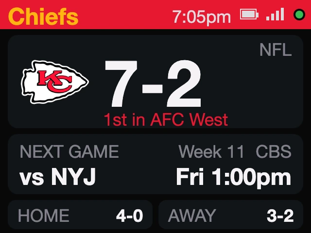
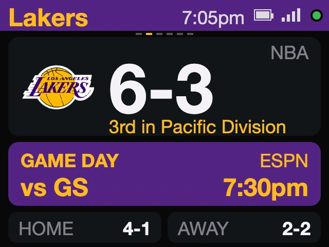

Pro and college, five sports
Your team's score,
on your desk.
A small display that follows up to six teams: the record, the next game and the live score. No app, no subscription.

In use
The score, without the app.
On the coffee table during the game, or on your desk when you can't watch.
How it works
Know where they stand.
And when they play next.
- The season so farThe record and place in the standings, under your team's logo and in its colours.
- The next gameWho and when, in your time zone. On game day the card lights up.
- The numbers behind itStreak and points for and against, taking turns with home and away records.
Setups
One team or six. Any sport.
Pick your teams on your phone. Change them any time.


Find your team
See your team on it.
Search 1,785 teams in 16 leagues. Add up to six and watch them take turns, with their real next game or live score.
Updates
It keeps up with the season.
Schedules and standings come in on their own. When we improve sportsMeter, it installs the new version over Wi-Fi by itself.
New: double tap the left button to stay on one team.
Every sportsMeter checks for it and installs it over Wi-Fi.
New schedules, new standings. Nothing to renew.
Build yours
Make it yours.
Stands are 3D-printed to order in Encinitas, California.
$119
Buy nowIncludes the stand, a USB-C cable and a setup card. Checkout at encinitas3d.com.
Gifts
One gift, any team.
They pick their own team at setup, so you never have to guess. Ordering several for an office? Email us.
Ask about a larger order

Getting started
Set up in a minute.
- 1Plug it in
Scan the code on the screen to join its Wi-Fi. The setup page opens.
- 2Pick your Wi-Fi
Choose your home network and enter the password. It needs 2.4 GHz.
- 3Add your teams
Choose a league, then a team. Add up to six, then Save.
No app, no account, no subscription. To change teams later, hold the middle button for 2 seconds. Setup guide
FAQ
Questions
Which sports and leagues does it cover?
Football, basketball, baseball, hockey and soccer: NFL, NBA, MLB, NHL, WNBA, MLS, NWSL, college football, men's and women's college basketball, the Premier League, Liga MX, LaLiga, Bundesliga, Serie A and Ligue 1. That is 1,785 teams; find yours.
How many teams can it follow?
Up to six, from any mix of sports. They take turns on the screen, and a live game takes over until it ends.
How fast do scores update?
During a game it checks every 20 seconds. Scores usually trail the live action by under a minute; streams are often further behind than that.
What does it show when there is no game?
The record, place in the standings and the next game in your time zone. Between seasons the game card reads "No game scheduled" until the next one is on the calendar.
Does it show my team's logo?
Yes. Once it is online it fetches your team's logo and uses the team's colours; until a logo arrives it shows the team's initials on a block of its colour. The screens on this page show real teams with sample season numbers.
Can I change teams later?
Yes. Hold the middle button for 2 seconds and open the address it shows on a phone on the same Wi-Fi. Your Wi-Fi stays set up.
Is there an app or a subscription?
No. Setup is a web page on your phone, and there is nothing to renew. Updates install themselves over Wi-Fi.
What Wi-Fi does it need?
2.4 GHz Wi-Fi with a password. Guest or office networks that make you sign in on a web page will not work.
What are the specs?
2-inch 320 by 240 colour screen, ESP32, 2.4 GHz Wi-Fi, three buttons, USB-C power or a built-in battery.
myDeskMeter